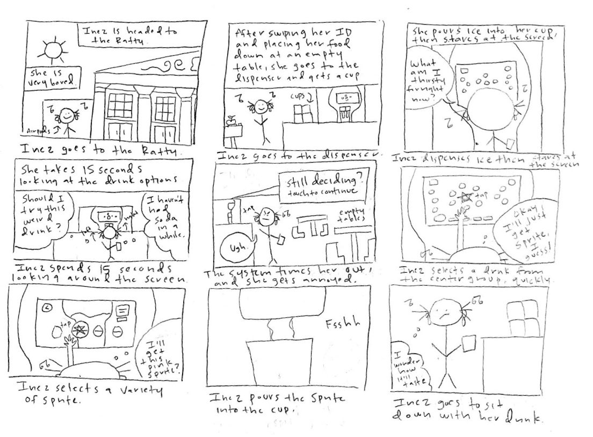

Taste the Feeling
Goal: To choose the right drink!
Context
The Coca-Cola Freestyle drink dispenser, specifically the one found at the Sharpe Refectory (a.k.a. the Ratty) at Brown University, is commonly used by students to grab drinks to accompany their meals. The Freestyle dispenser makes it easier for users to dispense ice and drinks, offering a variety of soda, juice, and water options from the Coca-Cola Company. The dispenser has an interactive touch screen in which users can tap on their preferred drink and then the specific variety of that drink they would like to dispense. There are also buttons on the screen for different drink categories, exclusive flavors, and contact-free pouring. I will observe students interacting with the dispenser interface, interview them about their positive and negative experiences in using the dispenser, create personas based on these users, and illustrate a detailed storyboard representing one of these personas.
This is my sketch of the drink dispenser:
Objective
My goal is to develop realistic personas for users of the Coca-Cola Freestyle drink dispenser.
Testing & Considerations
To develop the personas, I asked students these questions about the drink dispenser:
- 1. What do you recall about your first time using the Freestyle dispenser? Could you talk me through your first time?
- 2. Could you talk me through your thought process while using the Freestyle dispenser? Where is your focus (or,
in other words, your line of vision) throughout this process?
- - Do you go through the same process every time you use the dispenser?
- - Do you get the same drink every time?
- 3. What are your thoughts on how the drinks are grouped?
- 4. Did you notice the categories for drinks at the bottom of the screen or the buttons at the top of the screen, and why do you think you noticed or didn’t notice them?
- 5. What do you think about the categories for drinks? Would you suggest different categories, or are they fine as is?
- 6. Would you use contact-free pouring, and why?
In summary, the students responded with these answers:
- - All interviewees stated that the dispenser was intuitive and easy to use from the beginning, with there being no negative first impressions aside from one interviewee not thinking to dispense ice before dispensing their drink.
- - Most interviewees went through the same selection process each time they used the dispenser, usually going for the same drink. More specifically, they looked directly for and selected the drink they wanted to dispense rather than looking at all the options.
- - All interviewees said the way the drinks were grouped made sense, with all interviewees correctly thinking the drinks were grouped based on brand, except one who thought they were grouped by type of beverage.
- - All interviewees did not notice the categories and the buttons, and all interviewees thought the categories were fine as is but believed they would not use the categories even after they found out about them as they usually selected the same drinks.
- - All interviewees would not use contact-free pouring as it is inconvenient.
I also observed students using the drink dispenser.
- - Most of the users selected and dispensed drinks quickly without pausing too much.
- - A couple of the users mulled over which drinks to select by looking over the entire screen, which usually took them about 10-15 seconds. The ones who mulled for longer experienced a screen that asked if they were still deciding, which annoyed or rushed some of them.
- - None of the users touched the categories or buttons or used contact-free pouring.
- - The users’ desired drinks were usually in the center group.
- - Many of the users who mulled over their drinks also selected a drink from the center group, but these were the only types of users to choose a different drink variety.
- - Most of the users dispensed ice before starting their drink selection process. If they did not, they had to look away from the screen and take a pause before dispensing ice.
- - One user explicitly told me she was in a rush, and she accidentally selected the wrong drink and had to go back to the initial drink selection screen.
- - One user was disappointed with the color of the drink that was dispensed as it did not match the color of the drink on the screen.
Idea #1 - Personas
After interviewing and observing students using the drink dispenser, I developed two personas.
Lucy is a college student who overslept and is now late to an important work meeting that she is leading, however she wants a drink as the meeting is three hours long. Lucy faces problems with the interface in that she forgets to dispense ice before dispensing her drink, and she accidentally selects the wrong drink and has to go back to the initial screen to reselect her drink. Lucy represents the users who quickly tap through the interface without pausing, selecting the same drink each time they use the dispenser. She also is representative of the one student I observed who was in a rush to fill her drink and mistapped her drink.
Inez is a college student who is one of the few students staying at Brown over the Winter Break, meaning the campus is almost empty, and has much more free time than usual. Inez faces problems with the interface in that she is indecisive in her drink selection and the interface attempts to time her out, frustrating her then rushing her drink selection process. Inez represents the users who do look at all the available drink options and varieties (and still picks a drink from the center group and doesn’t use the categories), the users who put ice in their cups right away, and the users who receive the timing screen after taking too long to select a drink.
Idea #2 - Storyboard
I then created a storyboard for the Indecisive Inez persona.

Final Choice
Thanks to this technology, I chose to pick Croak-a-Cola as my drink. Ribbit!